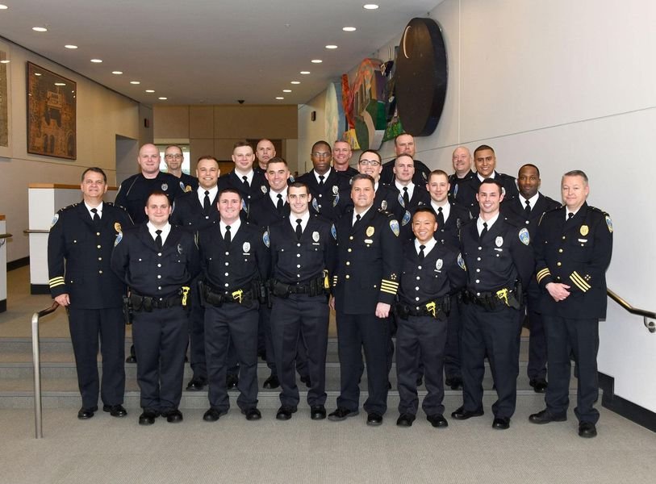

Mobile uploads
Deandre Holland is suing the Akron Police Department because he filed a discrimination complaint against his superiors. They then in retaliation accused him of falsifying documents, having to do with his National Guard deployments.
Racism continues to be a front and center topic in America. Right now I’m hearing a lot about reverse racism in conservative circles. That white people and Asian people are being denied entrance into colleges in favor of non-white people.
It is all such a mess. Race heavily influences many things in America. It looks to me like Asians will probably be the only people going to Ivy League schools because they are the people that can do the best on standardized tests. I guess that’s fine with me.
The picture here is of Deandre’s 2018 Akron Police graduating class.
There are definitely minorities represented in this picture. But the vast majority of these people are pasty, white men who probably don’t live in Akron. I’m sure that most of them are good people. And I’m also sure that most of them have spent very little time with non-white people.
I don’t really see how we get out of this racist quagmire that plagues America. We self isolate and segregate. So we rarely meet other people of different racial and economic backgrounds. And this seems particularly true with policing.
Clearly Deandre did not feel accepted in the Akron Police Department as a Black man. How many other Black officers feel the same way but just don’t say anything?
Why are so many police officers White? Why don’t Black people all become police officers?